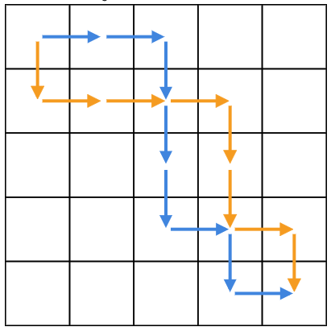
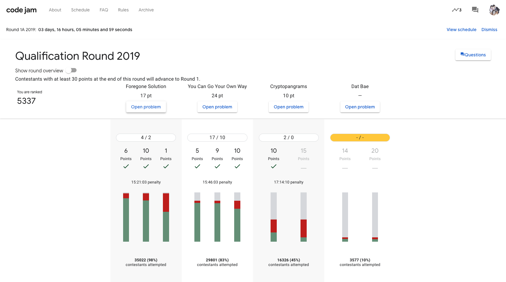

前言
我到當天下午五點我才想到有 GCJ 的 Qualification Round （資格賽）
然後我六點有補習，差點就要像去年一樣頂著睡意惺忪的眼睛打了
只要能夠在這個 Round 拿到 $30$ 分就可以打 Round 1 了
下一場是在這週六晚上九點～十一點半
撞到補習有點慘（九點下課），我想一下要怎麼跟老師交涉一下，讓我提早走
總之，過 Qualification Round 應該就算比去年好了
去年在耍廢直接爆炸。。。
希望今年可以去 Round 2
先放上這次的題目連結
problem A
題目
現在有個鍵盤的數字，現在數字 $4$ 的按鍵壞了
然而現在有數字要輸入，求分成兩個數字其總和等於原數、且兩數字中皆不可出現 $4$
多筆測資
解法
顯而易見的，這是大水題，輸入還開到 ${10} ^ {100}$
一臉就是在跟你說開 string 存啊
所以我們先把數字讀進來，然後檢查每個 digital ，遇到 $4$ 就先把他拆成 $3$ 跟 $1$
然後把這兩個數字輸出
注意不能有前導零
code
1 | // by. MiohitoKiri5474 |
後記
我還沒有注意到這題有保證輸入有 $4$
也沒有注意到這題要求輸出都要是正整數
運氣真好，歪歪得正
problem B
題目
給定一張二維圖以及一條從左上到右下的路線
求一條不重複的另外一條路線
所謂的路線重複是指 $a \to b$ 這個邊同時出現在兩條路線中
然後輸入都是SESE這樣，代表從起點開始他往哪些位置走
並且保證只會往東（右）以及往南（下）走
詳細請看這張圖

解法
$O ( N ^ 2 )$
垃圾如我，肯定只會寫 $N ^ 2$ 的解法
簡單來說就是 dp
我一開始定義 $dp[i][j]$ 代表從 $( 1, 1 )$ 走到 $( i, j )$ 需要經過的路線，用 string 存
然後就 MLE 了，所以我又加上滾動（因為每次要轉移只會用到上一行的資料，也就是說再前面的資料通通丟掉沒關係）
接著又 TLE 了，因為 string + char 這樣的操作本來就容易 TLE （？）
所以我又改成， $dp[i][j]$ 應該從哪轉移過來（紀錄 $S$ 或 $E$ ），最後從終點回朔回起點
不過這樣做有小地方需要注意一下
理論上來說，$dp[i][j]$ 可以從 $dp[i - 1][j]$ & $dp[i][j - 1]$ 轉移過來
所以無法處理題目要求的不重複路徑，於是我先把原本的路徑打印在圖上
如果 $( i, j )$ 有被原路徑經過，那麼就不要從也有被經過的點轉移過來
但是因為我懶得寫特判（明明就是自己懶）所以即便這個點無法從起點到達，還是會有路線（但是回朔回去可能不會到起點）
因此又要特判（相較之下好寫很多），如果兩邊都可以拿，拿路徑比較長的那一邊來做轉移
啊如果還是都可以拿，那就真的隨便了
1 | // by. MiohitoKiri5474 |
$O ( N )$
沒錯，$O ( N )$
我後來才發現我TMD被哏到了
只要把 S E 反轉就好啊
讀到 S 輸出 E ，反之讀到 E 輸出 S
這樣就會變成從左上到右下的對稱
所以路線不會重複。。。
1 | // by. MiohitoKiri5474 |
problem C
感謝 En-ming Huang 大大提供
要 solution 請去找他
code
1 | // by. MiohitoKiri5474 |
後記
這場打起來感覺好廢
最近比較少寫演算法競賽的題目
幾乎都是在讀新東西
手感感覺不是很好
教練，我想要拿 T-Shirt
p.s. GCJ 只要進 Round 3 就可以拿到一件 T-Shirt。。。只是聽說要很久才會拿到？！
下一場 1A 感覺不是很好打，因為是第一場，沒意外應該會有不少人去打
而且時間上來說是 CodeForces 的 usaul time
中國人應該不少（汗
1A 1B 1C 要有一場前 1500 名才能進去啊（遠望
覺得有點難@@
最後放個計分板截圖

寫完這篇文章，在本地端用 hexo 編譯預覽出來後
發現圖片邊緣有白框
。。。
好樣的，我又要來修 css 配置了
工作量 up up
= =